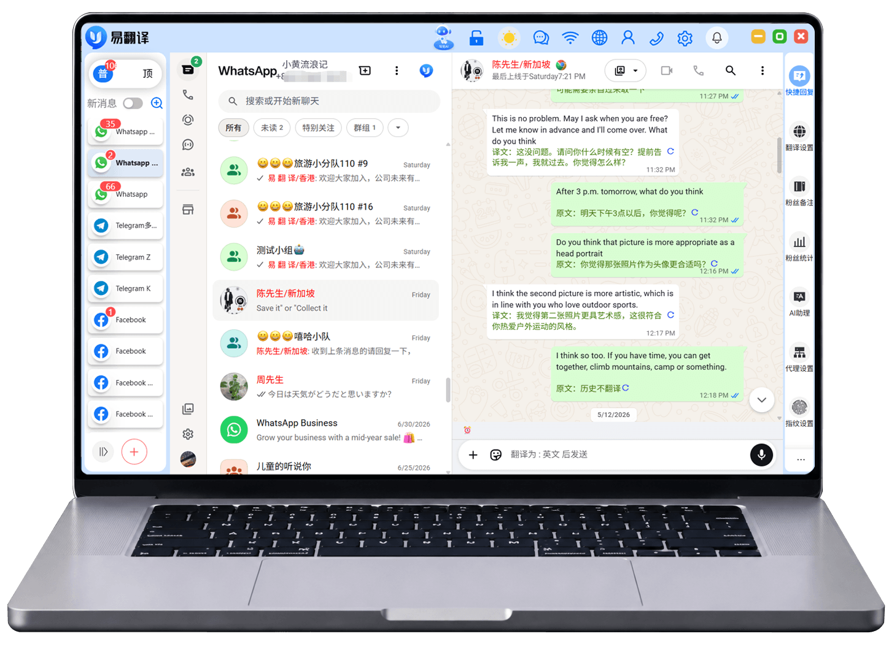
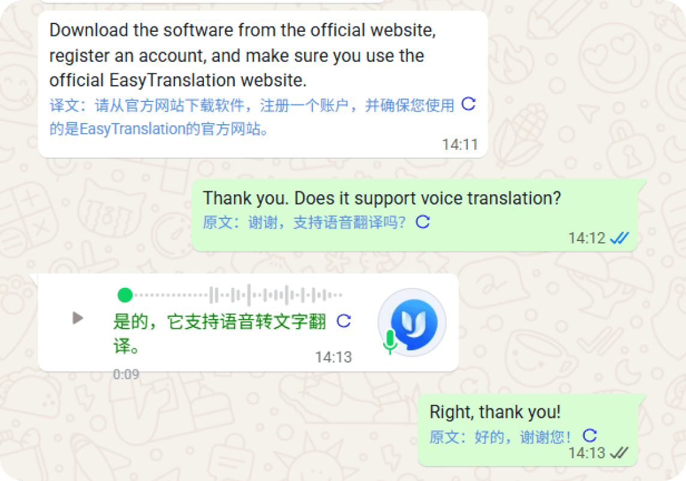
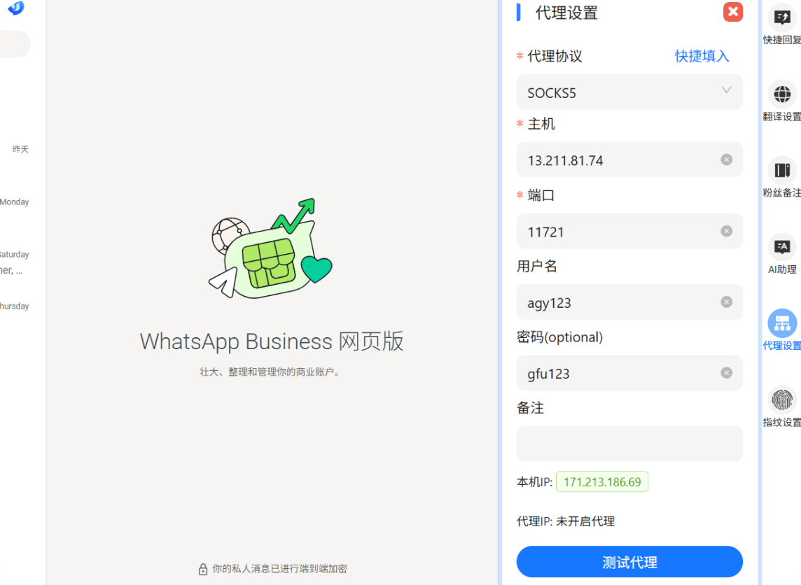
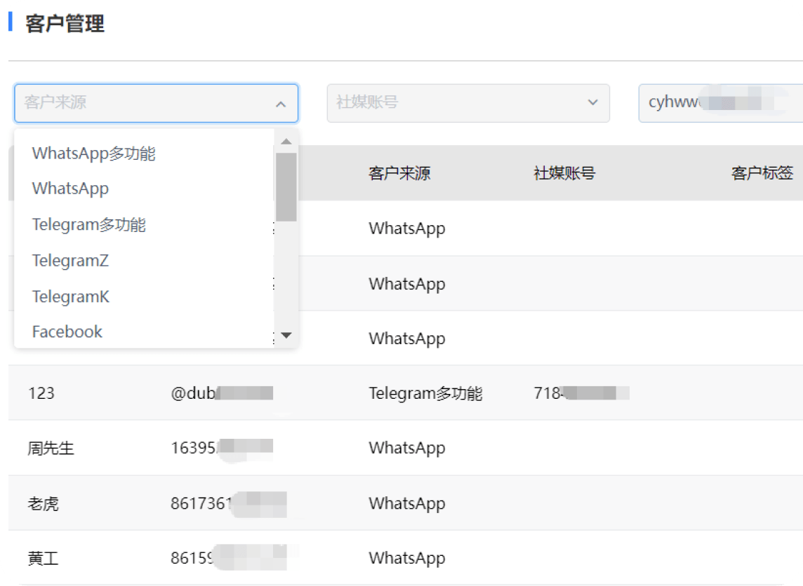

01
易翻译双向聊天翻译
易翻译在支持的会话环境中辅助理解收到的内容，并将回复转换为目标语言。常见对话不必频繁往返其他翻译窗口，重要内容仍由人员确认。
易翻译 TRANEASY FOR WINDOWS
易翻译 Traneasy —— Windows 桌面翻译软件
易翻译把实时翻译、多平台会话、客户记录与团队协作放进同一套桌面工作空间。客服与海外销售用易翻译少做窗口切换，把更多时间留给判断、回应和关系维护。易翻译专注跨境客服实时聊天翻译，是跨境团队的翻译工作台。
安装包由 download.traneasy.com.cn 官方分发域名提供
常用沟通渠道，在一个工作视野中衔接

减少复制粘贴，让翻译成为沟通过程的一部分。
ONE WORKSPACE · THREE CONTEXTS
从收到客户消息，到用合适语言回应，再到记录下一次跟进信息，易翻译把彼此关联的工作放在同一个桌面视野中。
易翻译在支持的会话环境中辅助理解收到的内容，并将回复转换为目标语言。常见对话不必频繁往返其他翻译窗口，重要内容仍由人员确认。
易翻译将常用海外沟通渠道纳入统一工作视野，减少窗口分散带来的遗漏。具体平台适配状态会随客户端与第三方软件更新而变化。
易翻译用标签、备注、来源和跟进阶段整理客户记录，让下一位协作成员不必从零理解对话背景，也让后续沟通更连贯。
MESSAGE JOURNEY
点击四个步骤，查看易翻译从消息进入到客户记录更新的基本工作路径。易翻译负责缩短操作距离，业务判断仍然由人完成，让跨境客服实时聊天翻译更有条理。
今天 10:26
可以确认一下预计送达时间吗？
先保留原文与渠道信息，为后续理解和回复提供完整上下文。
TRANSLATION IN CONTEXT
易翻译把翻译辅助放进日常会话路径。收到外语消息时，可以结合原文理解客户诉求；输入中文回复后，再根据目标语言进行转换并检查表达。
涉及报价、合同、付款或技术承诺时，应安排人工复核。

ACCOUNT WORKSPACE
面向多渠道或多市场运营时，易翻译可以为不同账号保留相对独立的工作环境，并根据实际网络条件设置常见代理协议。这样更容易区分业务用途、操作人员与客户范围。
独立环境不能替代平台合规，请遵守各渠道的账号和营销规则。

CUSTOMER CONTEXT
客户不应只存在于聊天列表里。易翻译通过备注、标签、来源和状态整理信息，客服或销售可以快速知道对方关注什么、当前走到哪一步，以及下一次应该由谁继续跟进。

WORKING SCENARIOS
易翻译真正有价值的地方，不只是转换一句话，而是让跨境客服、销售和团队协作拥有更连续的工作方法。
售前咨询、订单确认、物流进度和售后处理往往会反复出现。易翻译客服可以先建立经过审核的常用话术，再结合实时翻译理解客户问题，发送前核对订单状态与目标语言。这样既减少重复输入，也避免脱离当前业务背景机械回复。
从首次联系到持续跟进，易翻译外贸销售需要同时记住语言、产品兴趣、报价阶段和下一步动作。把对话与客户标签放在同一视野中，有助于在回复时找到上下文，并为后续沟通留下清晰记录。价格、合同和交付承诺仍需由负责人确认。
当多个成员共同服务客户时，仅靠个人聊天记录很容易丢失背景。易翻译团队可以统一客户标签与常用表达，在交接时保留必要的跟进信息，同时明确账号权限和数据范围。涉及敏感资料时，应遵循最小必要原则进行保存和共享。
RESPONSIBLE USE
易翻译可以缩短操作路径，但不会替代业务判断、语言复核和平台规则。建立清晰的使用边界，才能让跨语言沟通长期稳定运行。
下载前核对分发域名、文件名称和系统版本，不使用来历不明的套壳安装包。
合同、金额、技术参数、地址和合规承诺等内容，由具备相应能力的人员确认。
客户备注仅保存业务所需内容，账号权限按岗位分配，并定期清理不再需要的信息。
群发与营销仅面向已授权对象，尊重退订要求，不用于骚扰或规避平台限制。
BEFORE YOU DOWNLOAD
产品功能、平台适配和语言范围可能随版本变化。以下内容用于帮助你理解基本使用边界。
前往易翻译 Windows 下载它主要面向需要与不同语言客户持续沟通的跨境客服、外贸销售和团队管理人员。用户可以在同一工作空间中处理翻译、会话与客户记录，具体功能范围以当前客户端为准。
官网介绍的双向翻译能力可在支持的会话环境中辅助处理收发内容，减少在翻译工具与聊天窗口之间往返。首次使用时应先确认目标语言和翻译设置。
官网当前介绍包含文本、语音转文字和图片内容等多种形式的翻译辅助。不同平台、语言和客户端版本的可用范围可能不同，应以实际界面为准。
官网展示了 WhatsApp、Telegram、LINE、Zalo、Messenger、Facebook、Instagram 和 TikTok 等常见渠道。平台适配会随第三方软件更新而变化，使用前建议核对当前版本。
团队可以按地区、意向、产品兴趣或跟进阶段整理客户信息，让下一次沟通更容易找到上下文。标签应保持简洁，并避免记录无必要的敏感信息。
批量触达应仅面向已经授权或存在合理业务联系的对象，并遵守所在地法律、平台规则和退订要求。请勿用于骚扰、垃圾信息或规避平台限制。
合同条款、报价金额、付款信息、技术参数、地址和合规承诺等重要内容应由具备相应语言或业务能力的人员复核，机器翻译不应替代专业判断。
本页 Windows 下载按钮连接至 download.traneasy.com.cn 官方分发域名的易翻译 5.2.14 安装包，适用于 Windows 10 和 Windows 11。安装前请核对域名、文件名称与系统版本。
READY FOR THE NEXT MESSAGE
下载易翻译 Windows 客户端，从常用语言、沟通渠道和第一组客户标签开始建立工作空间。
请仅从可信域名下载易翻译安装包